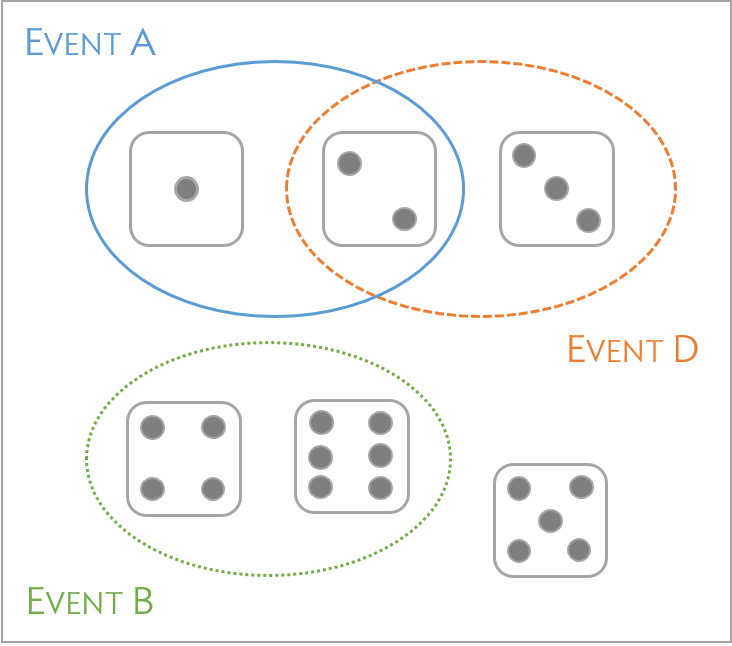
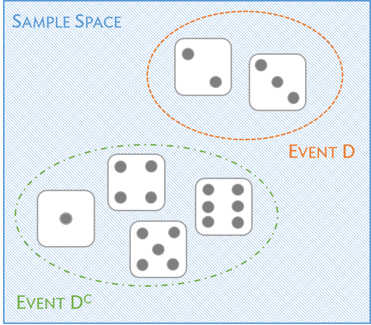
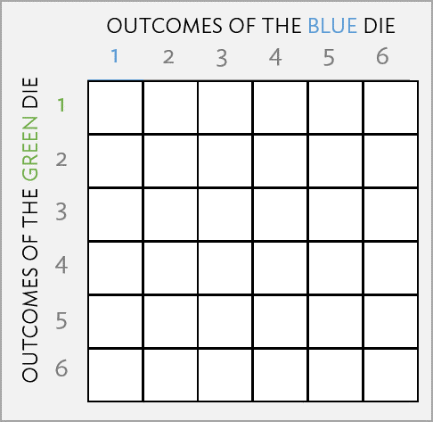

Lesson 3: Defining Probability
TB sections 2.1
2025-10-06
Learning Objectives
Define probability and explain the Law of Large Numbers within examples
Define relationships between events and their probability properties (including disjoint events, non-disjoint events, complements, and independent events)
Calculate an unknown probability in a word problem using the probability properties
Where are we?

Let’s start with an example!
Example: Rolling fair 6-sided dice
Suppose you roll a fair 6-sided die.
What is the probability that you roll a 4?
What is the probability that you roll an even number?
What is the probability that you did not roll a 3?
Learning Objectives
- Define probability and explain the Law of Large Numbers within examples
Define relationships between events and their probability properties (including disjoint events, non-disjoint events, complements, and independent events)
Calculate an unknown probability in a word problem using the probability properties
What is a probability?
Definition: Probability
How likely something will happen.
- On a more technical note, the probability of an outcome is the proportion of times the outcome would occur if the random phenomenon could be observed an infinite number of times.
- We can think of flipping a coin. There are two possible outcomes (heads or tails). The probability of getting heads is 0.5.
What is a probability? with the Law of Large Numbers
We can think of flipping a coin. There are two possible outcomes (heads or tails). The probability of getting heads is 0.5.
- If we flip the coin 10 times, it is not certain that we will get 5 heads. However, if we flip it infinite times, we will get heads 50% of the flips.
Law of large numbers
As more observations are collected, the proportion of occurrences, \(\hat{p}\), with a particular outcome converges to the true probability \(p\) of that outcome.
Poll Everywhere Question 1
Some probability notation
- Probability typically defined as a proportion
- Takes values between 0 and 1
- Probability can also be expressed as a “percent chance,” taking values between 0% and 100%
- If we want to discuss the probability of an event, say A, we would write \(P(A)\)
- We can write: \(A = \{\text{rolling a 1}\}\), with associated probability \(P(A)\)
- OR we can write \(P(\text{rolling a 1})\)
Learning Objectives
- Define probability and explain the Law of Large Numbers within examples
- Define relationships between events and their probability properties (including disjoint events, non-disjoint events, complements, and independent events)
- Calculate an unknown probability in a word problem using the probability properties
Disjoint / mutually exclusive events
Disjoint / mutually exclusive events
Two events or outcomes are called disjoint or mutually exclusive if they cannot both happen at the same time.
Poll Everywhere Question 2
Probability for disjoint events
Probability rule for disjoint events
If \(A_1\) and \(A_2\) represent two disjoint outcomes, then the probability that either one of them occurs is given by \[P(A_1\text{ or } A_2) = P(A_1) + P(A_2)\]
If there are \(k\) disjoint outcomes \(A_1\), …, \(A_k\), then the probability that either one of these outcomes will occur is \[P(A_1) + P(A_2) + \cdots + P(A_k)\]
- From the poll everywhere question with the die, what is the probability of event A or B?

Probabilities when events are not disjoint
When events are not disjoint, we cannot use the previous addition rule for probabilities!!
We must use a general rule that recognizes the potential overlap between events
General probability addition rule
If \(A\) and \(B\) are any two events, disjoint or not, then the probability that at least one of them will occur is \[\begin{eqnarray} P(A\text{ or }B) = P(A) + P(B) - P(A\text{ and }B), \label{generalAdditionRule} \end{eqnarray}\] where \(P(A\) and \(B)\) is the probability that both events occur.
Think back to our die
- Event A and D are not disjoint, they share an outcome of rolling a 2
- How do we find the probability of event A or event D?
Probability distributions
- A probability distribution consists of all disjoint outcomes and their associated probabilities
- We’ve already seen one in our heads and tails example
Rules for a probability distribution
A probability distribution is a list of all possible outcomes and their associated probabilities that satisfies three rules:
- The outcomes listed must be disjoint
- Each probability must be between 0 and 1
- The probabilities must total to 1

Complement of an event
We need two math definitions for this:
Sample space: denoted as \(S\) is the set of all possible outcomes
Complement: complement of an event, say D, represents all the outcomes in the sample space that are not in D
- Complement is denoted as \(D^c\) or \(D'\)
Complement
The complement of event \(A\) is denoted \(A^c\), and \(A^c\) represents all outcomes not in \(A\). \(A\) and \(A^c\) are mathematically related: \[\begin{eqnarray}\label{complement} P(A) + P(A^c) = 1, \quad\text{i.e.}\quad P(A) = 1-P(A^c). \end{eqnarray}\]

Independence
Two processes are independent if knowing the outcome of one provides no information about the outcome of the other
For example, if we flip two different coins and one lands on heads, what does that tell us about the other coin?
Multiplication Rule for independent processes
If \(A\) and \(B\) represent events from two different and independent processes, then the probability that both \(A\) and \(B\) occur is given by: \[\begin{eqnarray}\label{eqForIndependentEvents} P(A \text{ and }B) = P(A) P(B). \end{eqnarray}\] Similarly, if there are \(k\) events \(A_1\), …, \(A_k\) from \(k\) independent processes, then the probability they all occur is \[\begin{eqnarray*} P(A_1) P(A_2) \cdots P(A_k). \end{eqnarray*}\]
Poll Everywhere Question 3
Learning Objectives
Define probability and explain the Law of Large Numbers within examples
Define relationships between events and their probability properties (including disjoint events, non-disjoint events, complements, and independent events)
- Calculate an unknown probability in a word problem using the probability properties
Example rolling two dice
What is the probability that both dice will be 1?

General steps for probability word problems
Define the events in the problem and make a Venn Diagram
Translate the words and numbers into probability statements
Translate the question into a probability statement
Think about the various definitions and rules of probabilities. Is there a way to define our question’s probability statement (in step 3) using the probability statements with assigned values (in step 2)?
Plug in the given numbers to calculate the answer!
Weekly medications
Example 3
If a subject has an
80% chance of taking their medication this week,
70% chance of taking their medication next week, and
10% chance of not taking their medication either week,
then find the probability of them taking their medication both weeks.
Hint: Draw a Venn diagram labelling each of the parts to find the probability.
Lesson 3 Slides